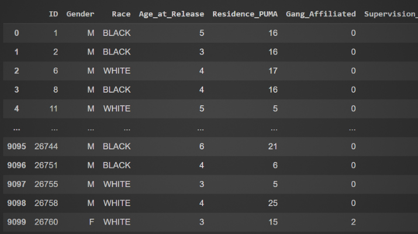

About Me
I am passionate about immuno-oncology and data-driven R&D through bioinformatics pipelines. My experience connecting wet lab insights to dry lab workflows and conducting clinical research has equipped me with the skills to succeed in a translational research setting.
In my spare time, I like to express my creativity through art, like painting and dancing, or immersing myself in a book!

My Toolkit
- R
- Python
- SQL
- C++
- Javascript
 PhysiCell
PhysiCell- Genome Analysis
- PBPK
- MD
- Scientific Communication
- Bioinformatics pipelines
- Bash